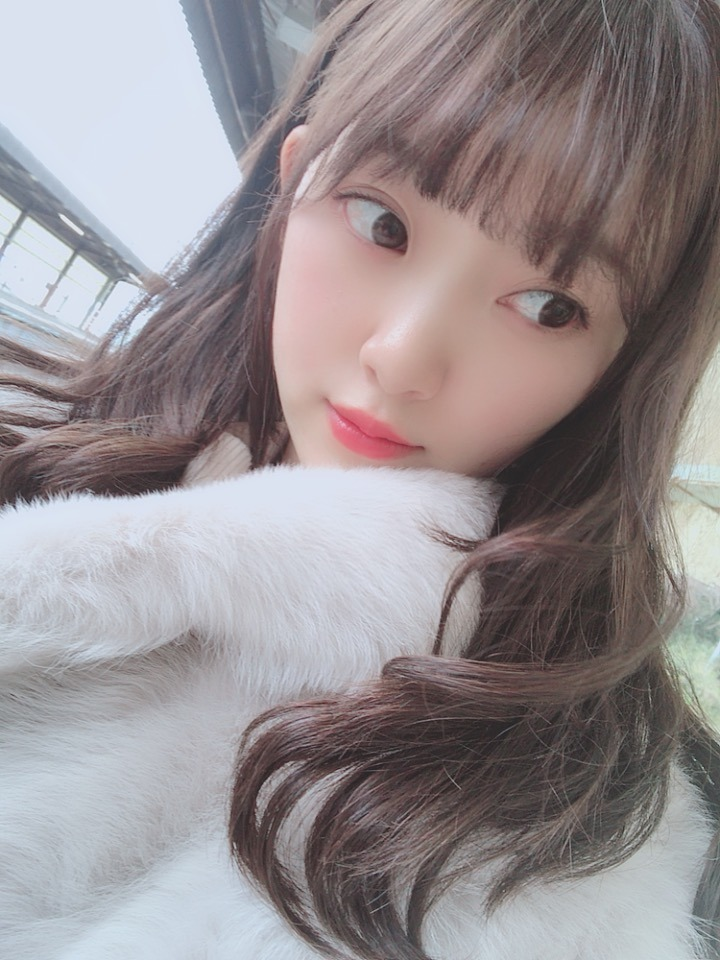
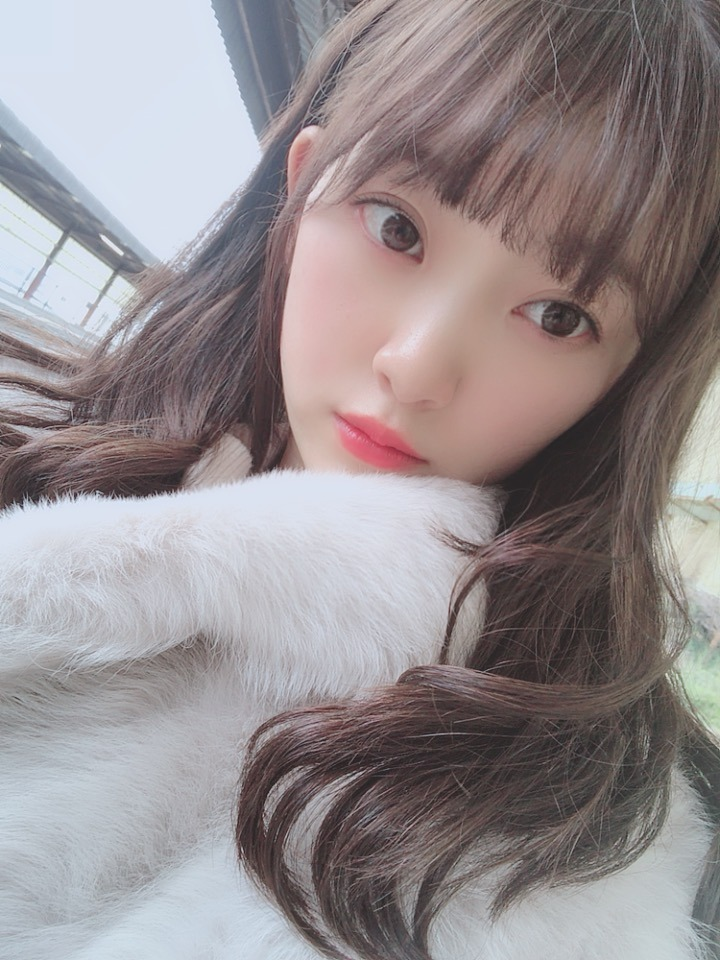
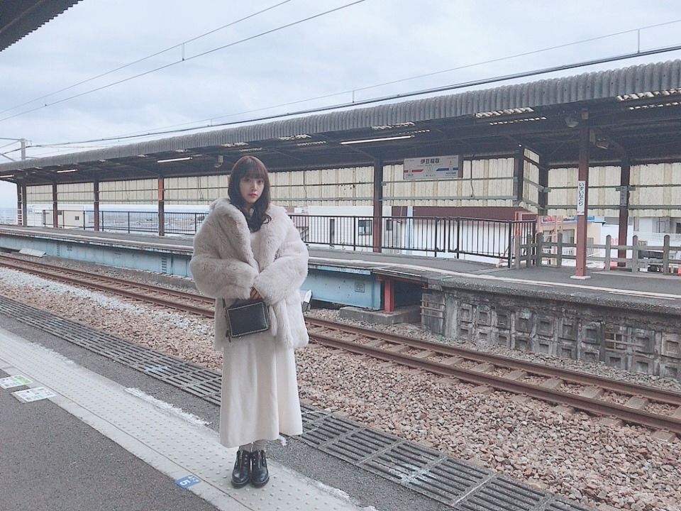

2019/0112Satいい湯だなアハハン
温泉街に行ったら買うもの
たこわさび
アジの干物
温泉まんじゅう
おかき
しょっぱい梅干し
です！
梅干しはとびきりしょっぱいのがすき！
先日、母と海の方へ
温泉旅行に行ってきましたー。
前はお母さんに連れてってもらっていた旅行を
今は私が連れていけることが嬉しくて、
少しでも親孝行になってたらいいな...
毎年こうして旅行に行っているけど
一緒にどこかへ行ける1回1回を
大切にしないとなぁって改めて思いました✨



たくさん海鮮食べて温泉に入って
肌がもちもち、幸せです☺︎
いろんな電車にも乗りました〜
まったりお話ししたり寝たり
相変わらずのマイペース親子です

お母さんの写真とか動画たくさん撮りすぎて
携帯の容量が不安。笑
また行けますように！
いいリフレッシュになりました✨✨
あ、メールの方でも
写真送りますね☺︎
待っとって〜
では
ps.髪色明るくなってきた...
好き？かな？
2019/01/12 13:12


コメント(526)
とてもかわいいです✨
俺が温泉地に行ったら絶対に買うのが「温泉まんじゅう」なんだよね。
というのも、俺の家族は甘いものが大好きで、特に「あんこ」が好きだから、おみやげで買っていくと一番喜ぶからなんだよ。
それと漬物や干物あたりをお土産で買うよ。
そういえば、最近は温泉
温泉街の雰囲気も好きだし、お土産を選ぶのも楽しいし、大きなお風呂って気持ちいいし、露天風呂に入りたいし、久しぶりに温泉地に行こうかな。
岐阜って温泉地ってイメージなんだけど、オススメの温泉があったら教えて。
未央奈は旅館に泊まったら何回温泉に入る？
俺は、旅館に着いたら、寝る前、翌日の朝食前の計3回温泉に入ってるよ。
黒髪も似合ってるけど、明るい髪色も未央奈に似合ってるし、可愛いよね。
明後日の握手会で未央奈に会うのが楽しみだよ。
ゴロ～
旅行が楽しそうでよかったです！
いつも応援しています！
私服もめちゃめちゃおしゃれ！！
きっとみおなちゃんだから着こなせるのね
髪色とっっってもいい！
ほんとにかわいい！
今の髪色一番好きかも(*´`)♡♡
だいすき！
温泉に行って、心も体も癒されたいです笑
温泉といったらやっぱりあがった後のコーヒー牛乳とかが好きです！
他にもフルーツ牛乳も好きで、温泉に行った時は、必ず飲んでいます(∩´∀`∩)
未央奈さんも良かったら、フルーツ牛乳飲んでみてください( ˙꒳˙ᐢ )ｳｨｯ
じゃら～ん じゃら～ん( *ˊᵕˋ)ﾉ
今日も1日お疲れ様でした
旅行はとても良きなんですが
前から気になってたんだけど…
いつもお父さんは連れて行ってもらえないのですか？(^^;
髪明るいの良いと思います(๑˃̵ᴗ˂̵)
では、明日も1日楽しもうd(@^∇ﾟ)/ﾌｧｲﾄｯ♪
おやすみおな☪️
え？
日本･･･
ほぼ海に面していますけど？(笑)
あ～熱いのかな～～
海鮮いいですよね。
海の周辺は特にね。
親孝行してますね。
温泉まんじゅう
がね。お気に入りでして。
お土産に頂くと嬉しくなります。
はずれは今のところないし、
もちもちしているのもいいですよね。
もちろん。
他のお土産も嬉しいんですけどね(笑)
未知との遭遇
髪色明るくて好きです
みおなちゃん大人っぽくなった
とってもかわいい
また更新待ってます
仕事の疲れを取る為のリフレッシュもできて良かったね(^^)
家族を大切にしているところ、とっても素敵です。
髪の色は黒も似合ってたけど、こっちも好き。ってかこの髪型も好き♪
よく握手会でやってくれるハーフツインはもっと好き！
お母さんとの温泉旅行いいね(^o^)／
親孝行なんてえらいな～(^_^)
写真の髪の色も似合ってて良いと思うよ(^o^)／
可愛いな～(^_^)
それじゃ、またね(^o^)／
ぼーっと見入っちゃいました笑
次は握手申し込もうかな…！
親と仲よくて羨ましいくらい
なかなかいないよ
髪色は自然な感じが好きです～。
(^-^)
温泉旅行いいな( * ॑꒳ ॑* )
旅行行きたい（*＾＾*)
梅干しってちょっとすっぱい方が良くない？笑
髪色明るいの最高です！（どんな髪色でも最高だけどｗ）
形態の容量気を付けてねｗ
温泉旅行良いですね〜
親孝行って大事ですよね
親のことを大切にできる人めっちゃ尊敬します
そういうところも未央奈さんの好きなところです
また更新まってま〜す
したっけ〜〜
どさんこしゅーちゃん
冬は、寒いから気を付けてね！
バライティイ頑張ってね‼️‼️
応援してるよ
ゆっくり休めましたか？
無理せずゆっくり休んでください。
応援してます。
みおなみたいな娘が欲しかったなぁ。
親孝行しててすごい。
今年はまだしてない。しなければ(^.^)
髪色サイコーやで
かわいい
でこやばいです
どこかの番組でみおなの風呂にかける時間が超短いってみりあが言っていた気がするけどお母さんとだったらなが～くお湯に浸かるのかな？
おやすみおな。
でもロングよりショートカットの方が好きかもで〜す！
美人になりましたね！マイペースいいですよね
寒い日が続きますが体には気をつけてがんばってください！
自分もしょっぱい方の梅干しがすきです！
海未央奈！
よかったね！
ではまた！
髪色すきー✨
服装もオシャレ
14日の個握で会うの楽しみ♪
目印は蝶ネクタイです(^-^)
そして親思いで優しいとか最高っ！
どんどん未央奈の沼にはまってますw
髪とても似合ってるよ！
家族と過ごす時間を大切にしなきゃいけないなと気づくことができました。ありがとう。
髪色、長さが好きです
ちょっと毛先を巻いている感じが大人っぽくていいなあと思います
お疲れ様でした！
色んな事が楽しんだように見えやな、
良かったと思うよ。
何に関係なく、いつも可愛いやん
髪色がめっちゃええやん、ぴったりだすわ
ずっと大好き！
モバメの方先見てたから誰と食べ歩きしてるのかと思ってたらお母さんだったのね！親孝行ですね〜
最近堀ちゃんがたくさんブログ更新してくれて嬉しい！本当に推してて毎日楽しいよ
堀ちゃんはなかなか来づらいと思うけど、神戸の有馬温泉ってところの温泉まんじゅうは美味しいし、「炭酸せんべい」っていう名物があるから一回来てみてほしいな、もしかすると乃木中で誰か言ってたやつかも？
自分も「僕は明日昨日のきみとデートする」最近読んだし、耳をすませばは堀ちゃんのこと考えながらみるだろうし、毎日が堀ちゃんづくしでどうしましょう。
体調だけは気をつけてね！堀ちゃんの頑張り、いつも見てるよ！
今日もお疲れ様です
温泉いいですね
足も伸ばせるし気持ちよさそうですね
生きてて1回も温泉に入った事が無いので入ってみたいなぁ（銭湯しかないです）
髪の色が明るくなってきたのは好きだよ
基本は黒髪が好きだけど1回くらいはやってみたくて思い切って自分も年末に初めてダークブラウンに染めてみました（周囲からは予想に反して好評だった）
堀ちゃんは黒髪はもちろん明るい髪色でも可愛いので自分らしくやって下さい（黒に戻しても、さらに明るくしてもそれぞれの良さがありますよ）
14日の握手会頑張って下さい
ありがとうございました
いまの髪色好きです
かわいい！
ほんと ほりちゃんは
顔や雰囲気がおしゃれだよね。
ほかの芸能人さんで例えると小松菜奈さんみたいな
もう雰囲気だけでおしゃれな感じになっちゃう。
なんかオシャレになる何かまとってます？笑
明るめも暗めの髪色も
ショートもロングも
ホントに全部似合っちゃうね
羨ましいです。
めちゃくちゃ陰での努力もしてるんだろうなぁ
前髪分けてもまた良きです‼
雰囲気変わって可愛いよ
未央奈の髪色明るめ結構好き！！髪型も(*´꒳`*)ﾖｷﾖｷ
すっごい大人っぽくなったね！！美しぃ
その服装も結構似合ってて本当に最後の写真めっちゃいい！！ ✨✨✨
ほんとに大人っぽい〜
もっと色んな写真楽しみにしてるね〜!!
またブログ更新楽しみにしてるね！！✨✨
( ' ∇ ' )/ｶﾞﾝﾊﾞﾚｰ未央奈❤
お疲れ様！
たこわさおれもだいすき！
ではでは！
コメントする